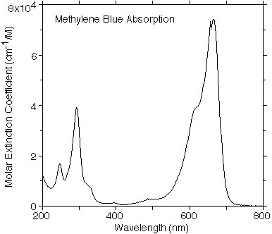
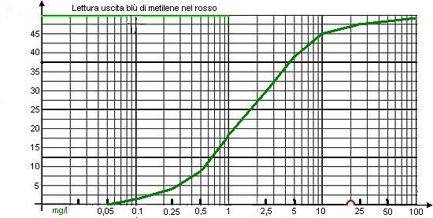

I lettori più affezionati di questo blog ricorderanno che nei post dal 96 al 99 si parlò di un "C O L O R I M E T R O" che avevo costruito quasi per gioco, in una delle mie alternanze ricorrenti tra hobby chimico ed hobby elettronico.
Non rifaccio qui tutto il discorso, ma rimando eventualmente a quelle pagine con questo link.
Il punto più debole della prima versione dell'apparecchio era la celletta di misura; in questa viene inserito il campione da analizzare, sotto forma di una soluzione più o meno colorata.
Quella costruita a suo tempo era veramente troppo rudimentale e poco affidabile ed è servita solo come verifica del funzionamento di principio dello strumento, con poche possibilità di eseguire qualche misura degna di questo nome.
Ora ho ricostruito la celletta in maniera leggermente diversa, con più cura e con dimensioni adeguate a contenere esattamente una cuvetta da 10 mm per spettrofotometria (non quelle costosissime in quarzo, ovviamente!).

Le due "protuberanze" in tubetto di rame che si vedono nell'immagine contengono rispettivamente un diodo LED di illuminazione (a destra) ed un fototransistor di lettura (a sinistra).
La luce emessa dal LED (di una certa lunghezza d'onda) è costretta ad attraversare il campione posto nel mezzo ed il raggio luminoso uscente viene captato dal fotoTR, il quale produce un segnale che è mandato poi al resto del circuito.
E' intuitivo pensare che il raggio luminoso "uscente" sarà tanto più attenuato tanto maggiore sarà la concentrazione del liquido colorato attraversato; meno intuitivo è il fatto che l'attenuazione non è affatto uguale per tutte le lunghezze d'onda della luce (quindi per tutti i colori) ma ogni sostanza ha una curva di attenuazione specifica, che varia moltissimo in funzione di questa lunghezza d'onda.
Ecco per esempio qui sotto il grafico che rappresenta "l'assorbanza" del blù di metilene in funzione del colore incidente: mentre nel viola-blù l'assorbimento è minimo, nel rosso cupo esso aumenta di circa 70mila volte.

Ciò può essere sfruttato per misurare per esempio concentrazioni incognite di sostanze con il metodo spettrofotometrico (ved. altrove per chi vuole approfondire).
Ho testato il mio apparecchietto con alcuni cationi e anioni colorati ed anche proprio col blù di metilene, per il quale esso sembra avere un particolare feeling... con i risultati che si vedono nel sottostante grafico.

In ascisse del grafico c'è la concentrazione in mg/l di sostanza ed in ordinate la lettura al milliamperometro, in una scala arbitraria da 0 a 50.
L'illuminazione, in accordo con quanto detto sopra, è stata fatta nel rosso a 630 nm.
Mi ha stupito l'estrema sensibilità verso questo (potentissimo) colorante, dato che possono essere misurate quantità dell'ordine di frazioni di mg per litro, che corrispondono per esempio a soluzioni molar-milionesime o molar-decimilionesime!
Questa è la massima sensibilità che ho finora verificato per lo strumento, se mi è concesso questo termine.
Naturalmente tutto questo è stato fatto per gioco (vogliamo essere più generosi? Diciamo allora per ricerca personale...) e non vi è nessuna velleità di misurazioni quantitative nè di impiego pratico di questo "colorimetro alla mia maniera".
Ma rimane molto forte e impagabile, questa sì, la soddisfazione di aver fatto (e imparato!) qualcosa abbinando la teoria con la pratica, la chimica con l'elettronica... mixando semplicemente un paio di hobbies. Cosa si vuole di più?